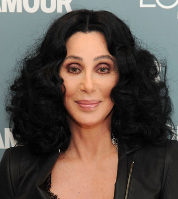

#3172 Prêt-à-Porter
Alternativ: Ready to Wear (Originaltitel)


 IMDB-Wertung: 5.1 / 10
IMDB-Wertung: 5.1 / 10  Metascore: 48
Metascore: 48 
Ausgerechnet zu den herbstlichen Prêt-à-Porter-Modenschauen beißt deren Leiter Olivier de la Fontane ins Gras. Während die Geliebte trauert, tröstet sich seine Gattin mit ihrem Ex-Lover, der des Mordes an Olivier verdächtigt wird. Doch die Show muss weitergehen, denn die Reichen und Schönen der ganzen Welt haben sich in Paris versammelt und wollen unbedingt gesehen werden. Und während die dummschwätzende Fernsehreporterin Kitti versucht, ihren Kolleginnen von 'Vogue' und 'Elle' ein paar Trends zu entlocken, landen zwei verfeindete Journalisten zuerst per Zufall im selben Hotelzimmer und bald darauf im gemeinsamen Bett...
Jahr: 1994
Dauer: 132 Minuten
FSK: 6
Land: USA Studio: MiramaxTonspuren:
Untertitel: Deutsch,
Auflösung: 1080p (1920x816) Größe: 10076 MB
Genre: Drama, Komödie
Regisseur:  Robert Altman
Robert Altman
Drehbuch: Robert Altman, Barbara Shulgasser
Soundtrack: Michel Legrand
Darsteller:
 Marcello Mastroianni als Sergei, Sergio
Marcello Mastroianni als Sergei, Sergio Sophia Loren als Isabella de la Fontaine
Sophia Loren als Isabella de la Fontaine Jean-Pierre Cassel als Olivier de la Fontaine
Jean-Pierre Cassel als Olivier de la Fontaine Kim Basinger als Kitty Potter
Kim Basinger als Kitty Potter- Chiara Mastroianni als Sophie Choiset
 Stephen Rea als Milo O'Brannigan
Stephen Rea als Milo O'Brannigan- Anouk Aimée als Simone Lowenthal
 Rupert Everett als Jack Lowenthal
Rupert Everett als Jack Lowenthal Rossy de Palma als Pilar
Rossy de Palma als Pilar- Georgianna Robertson als Dane Simpson
 Lili Taylor als Fiona Ulrich
Lili Taylor als Fiona Ulrich- Ute Lemper als Albertine
 Forest Whitaker als Cy Bianco
Forest Whitaker als Cy Bianco Richard E. Grant als Cort Romney
Richard E. Grant als Cort Romney Julia Roberts als Anne Eisenhower
Julia Roberts als Anne Eisenhower Tim Robbins als Joe Flynn
Tim Robbins als Joe Flynn Lauren Bacall als Slim Chrysler
Lauren Bacall als Slim Chrysler Lyle Lovett als Clint Lammeraux
Lyle Lovett als Clint Lammeraux Tracey Ullman als Nina Scant
Tracey Ullman als Nina Scant- Sally Kellerman als Sissy Wanamaker
 Linda Hunt als Regina Krumm
Linda Hunt als Regina Krumm Teri Garr als Louise Hamilton
Teri Garr als Louise Hamilton Danny Aiello als Major Hamilton
Danny Aiello als Major Hamilton Jean Rochefort als Inspector Tantpis
Jean Rochefort als Inspector Tantpis François Cluzet als Nina's Assistant
François Cluzet als Nina's Assistant- Katarzyna Figura als Sissy's Assistant
 Sam Robards als Regina's Assistant
Sam Robards als Regina's Assistant- Alexandra Vandernoot als Sky TV Reporter
 André Penvern als Hotel Clerk
André Penvern als Hotel Clerk- Harry Belafonte als Himself
-  Cher als Herself
- Helena Christensen als Herself
- Tatjana Patitz als Herself
- Jean-Paul Gaultier als Himself - Designer Featured with His Collection
- Björk als Model , uncredited
- Carla Bruni als Herself , uncredited
- Naomi Campbell als Herself , uncredited
- Greta Cavazzoni als Model , uncredited
- David Copperfield als Himself , uncredited
- Linda Evangelista als Herself , uncredited
- Adriana Karembeu als Herself , uncredited
- Claudia Schiffer als Herself , uncredited
- Christy Turlington als Herself , uncredited
- Tara Leon als Kiki Simpson
- Tom Novembre als Reggie
- Anne Canovas als Violetta Romney
 Michel Blanc als Inspector Forget
Michel Blanc als Inspector Forget- Tapa Sudana als Ketut
- Laura Benson als Milo's Entourage
- Laurent Lederer als Milo's Entourage
Datei: X:\1994\Prêt-à-Porter (1994, FSK6, 1920x816).mkv seit 09.02.2016
Festplatte: HD 1992-1995
 Es gibt insgesamt 67 Filme in der Gruppe '1994'
Es gibt insgesamt 67 Filme in der Gruppe '1994'